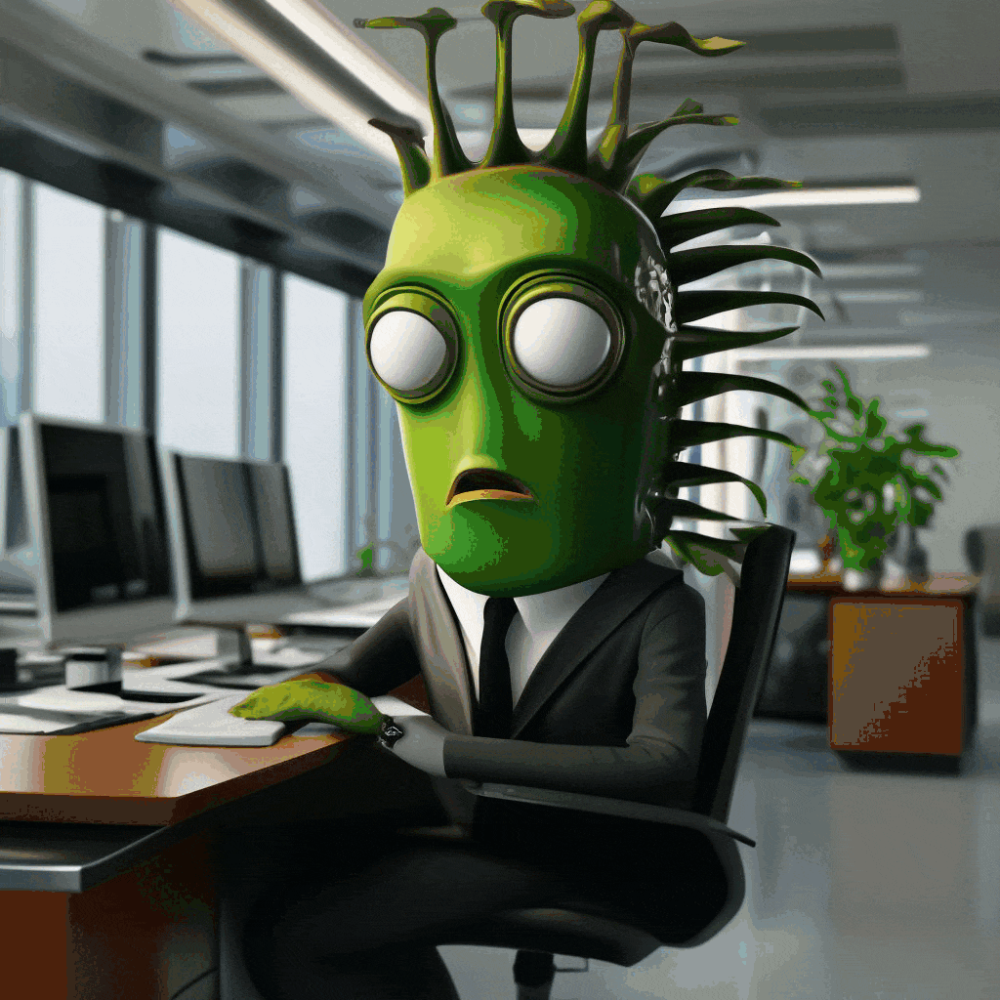

Интересные факты:
- 70% сотрудников хотя бы раз испытывали на себе чувство «Офисный планктон»
- Мотивация растёт на 40% при внедрении новых задач
- Планктоны чаще появляются при плохом менеджменте

Офисный мем
| Привычка | Процент сотрудников | Влияние на работу |
|---|---|---|
| Постоянная проверка соцсетей | 65% | ✅ Сильно снижает |
| Частые кофе-брейки | 45% | ▲ Умеренно снижает |
| Опоздания на работу | 30% | ✅ Сильно снижает |
| Длительные обеденные перерывы | 25% | ▲ Умеренно снижает |
| Личные разговоры по телефону | 55% | ✅ Сильно снижает |